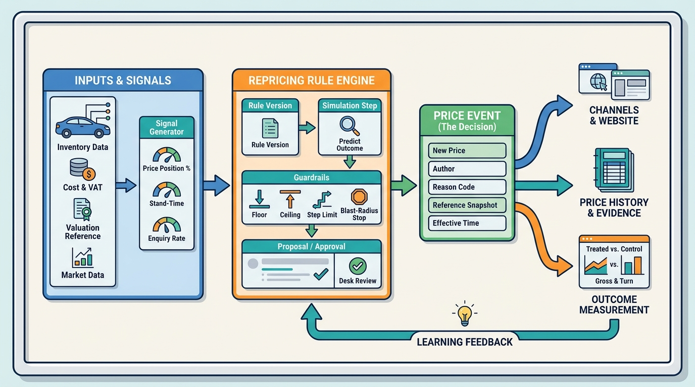

Part IV — DEALER: The Used-Car Workflow
Pricing to Turn: Market-Based Pricing, Signals and Repricing

Image generated by Google Gemini (gemini-3-pro-image-preview)
Part IV — DEALER: The Used-Car Workflow

Image generated by Google Gemini (gemini-3-pro-image-preview)